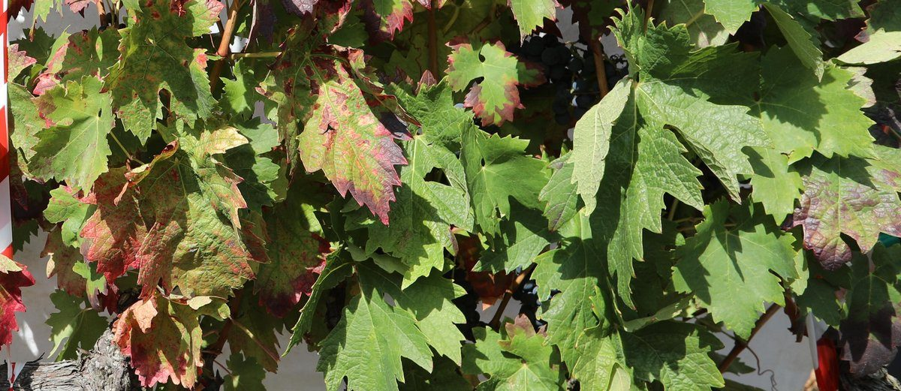
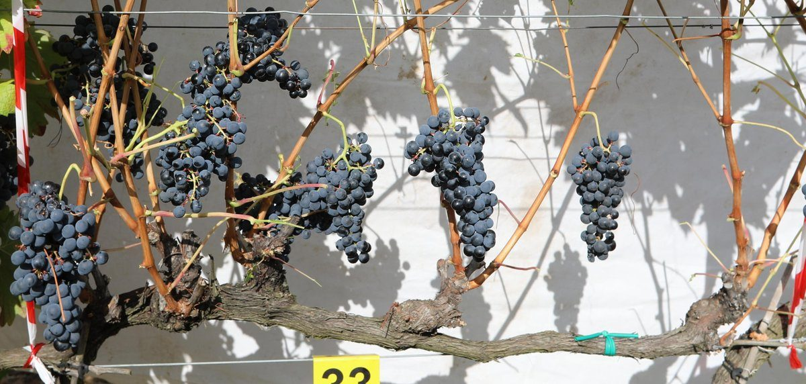
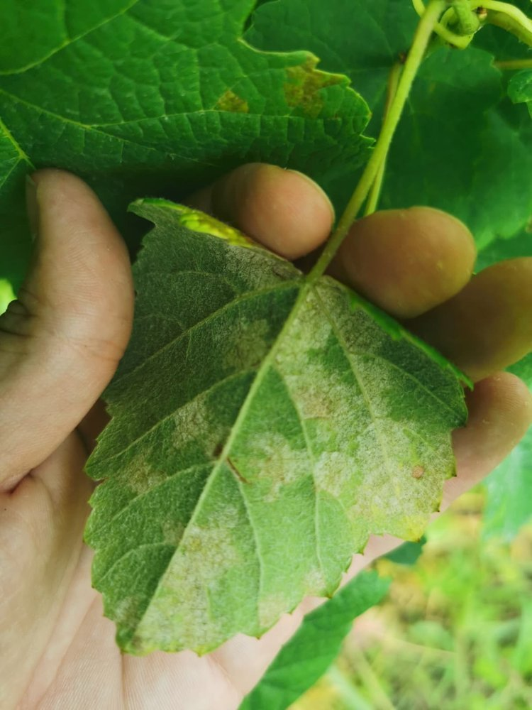
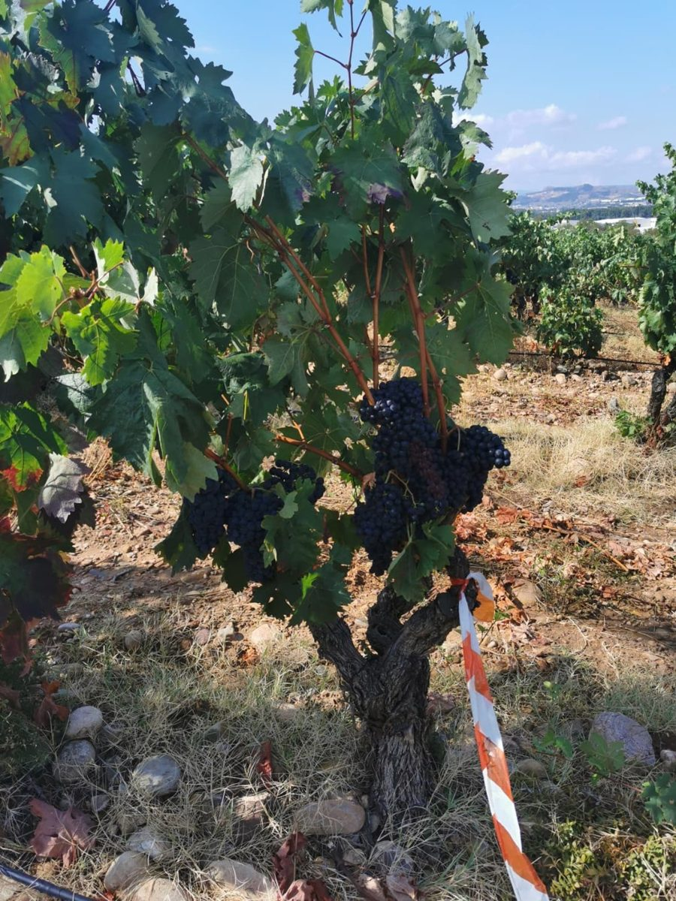
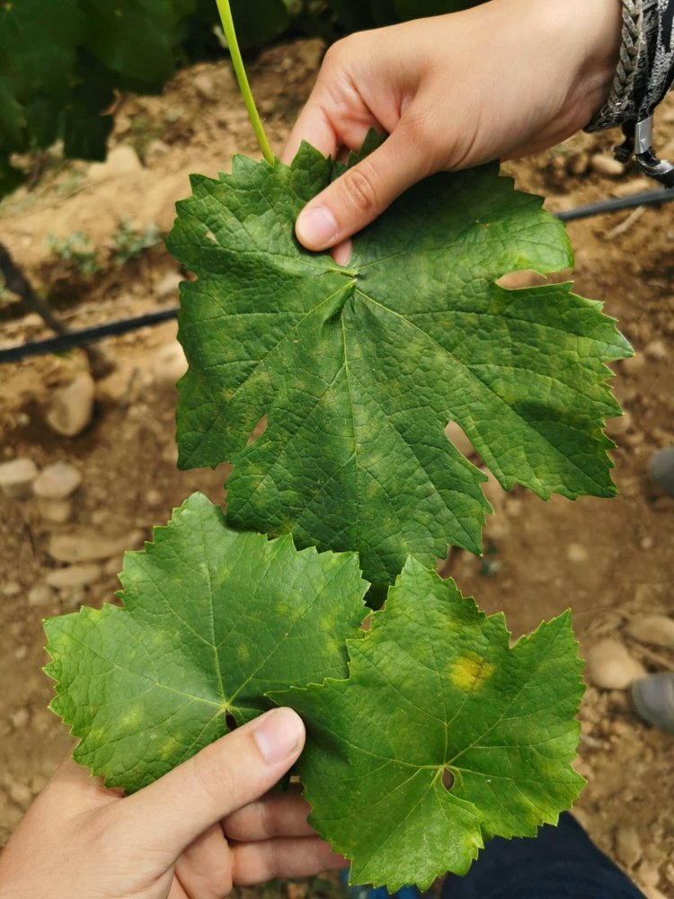
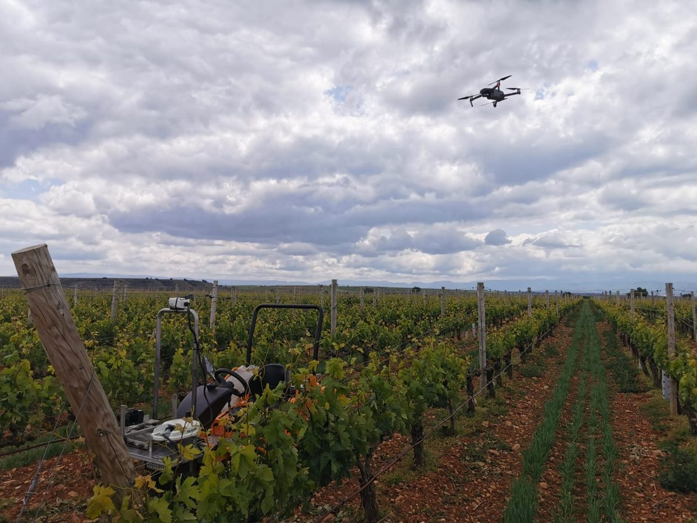
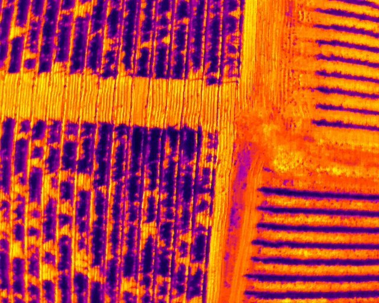
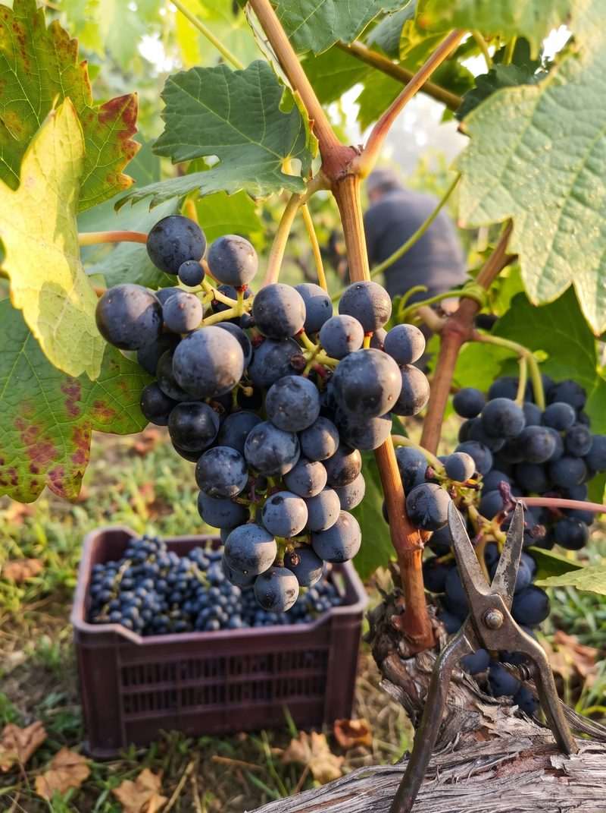

Ciencia de la vid · Divulgación · ICVV
Entre cepas
Tú contra la IA en el viñedo
¿Qué ve una máquina en un viñedo? La Viticultura de precisión: Según la OIV, un enfoque de gestión cíclico de las operaciones de campo, basado en herramientas de información y tecnología, que utiliza múltiples fuentes de datos relacionados con el viñedo para respaldar la toma de decisiones específicas para cada lugar, con el objetivo de optimizar los procesos de producción (OIV, 2019). usa cámaras, sensores e inteligencia artificial para medir las diferencias entre cepas y actuar solo donde hace falta. La IA cuenta racimos, detecta mildiu y reconoce la fase de la vid en segundos. ¿Lo haces tú mejor? Compruébalo.
Transcripción del vídeo (37 s)
El vídeo no tiene locución, solo sonido ambiente; el texto de cada escena aparece en la propia imagen.
- Un viñedo no es igual en todas partes. Vista desde arriba de una parcela: las cepas de la izquierda son pequeñas y amarillentas, y las de la derecha, grandes y de un verde intenso. Dentro de una misma parcela, las cepas crecen de forma distinta.
- Recoger datos. Un dron sobrevuela las filas y un vehículo con cámaras y sensores recorre las calles. Ondas de luz van de cada equipo a las cepas: recogen datos de cada zona del viñedo.
- De datos a mapas. La parcela se cubre con un mapa de colores, del amarillo (poco vigor) al verde oscuro (mucho vigor). De un vistazo se ve dónde crece más y dónde menos la vid.
- Actuar donde hace falta. Un tractor recorre la parcela y riega las zonas amarillas, pero no las verde oscuro. Esas zonas se van recuperando: se actúa donde hace falta, con más agua o más cuidados en unas zonas y menos en otras.
Pruébalo ahora: ¿cuántos racimos esconden las hojas?
Esta es una cepa real de La Rioja. Con hojas, a simple vista se ven unos pocos racimos. Desliza para quitar las hojas y mira cuántos había.

- 28,6 %de los racimos de las 20 cepas del reto estaban escondidos por las hojas
- 86 %de acierto de la IA al localizar zonas con mildiu en el campo (Hernández et al., 2025)
- 95,6 %de acierto de la IA al reconocer la fase de la vid en fotos nuevas (Íñiguez et al., 2025b)
Empieza aquí: una ruta de 15 minutos
- Mira el vídeo de arriba (37 s): un viñedo no es igual en todas partes (Bramley, 2010), y la viticultura de precisión mide esas diferencias.
- Juega los retos (≈ 5 min cada uno) y compara tu ojo con la IA.
- Explora los cinco objetivos del viñedo de precisión.
- Prueba el Laboratorio y mira la IA analizando fotos reales.

Contar¿Cuántos racimos hay?
Calcula cuántos racimos hay en cinco cepas y comprueba cuántos escondían las hojas.
Jugar a contar racimos
Detectar¿Mildiu o no?
Diez imágenes del viñedo: ¿ves el Mildiu: Enfermedad de la vid causada por un organismo parecido a un hongo (Plasmopara viticola). Se ve como manchas amarillentas, «de aceite», en el haz de las hojas.? Después, comprueba dónde estaba exactamente.
Jugar a detectar mildiu Reconocer
Reconocer¿En qué fase está la vid?
Brotes, flores, bayas verdes, uvas maduras: sitúa cada foto en la línea del tiempo del viñedo.
Jugar a reconocer la fase de la vid

La inteligencia artificial ya ayuda a mirar todo el viñedo, cepa a cepa. Funciona mejor cuando se elige bien cuándo y cómo mirar, y siempre junto a la mirada de una persona.
Cuidar el viñedo, cepa a cepa
Cinco objetivos en los que la tecnología ayuda a mirar mejor. Elige uno.

Estimar la producción
Saber cuánta uva habrá antes de vendimiar orienta el manejo del viñedo, la elaboración y la venta (Laurent et al., 2021). Para estimarlo hay que contar racimos, y las hojas esconden muchos.
En el viñedo sirve para: Ajustar el aclareo, organizar la vendimia (personal, cajas, depósitos) y negociar la venta de la uva con datos, no a ojo.

Vigilar la sanidad
El mildiu es una de las enfermedades más destructivas del viñedo, y vigilarlo a pie es laborioso y subjetivo (Poblete-Echeverría et al., 2025b). ¿Puede ayudar una cámara?
En el viñedo sirve para: Revisar antes los focos, tratar cuándo y dónde hace falta y evitar tratamientos innecesarios.

Conocer y vigilar el viñedo
Drones, satélites y sensores permiten vigilar la vid a lo largo del año (Tardaguila et al., 2021). Y la IA puede ayudar a reconocer la variedad (Gutiérrez et al., 2018a) o la fase del ciclo (Íñiguez et al., 2025b).
En el viñedo sirve para: Programar poda en verde, tratamientos y riegos según la fase real de cada parcela, y confirmar qué variedad hay plantada.

Manejar bien el riego
Las plantas también sufren sequía. Una cámara térmica, montada en un vehículo que avanza por el viñedo, permite estimar su estado hídrico (Gutiérrez et al., 2018b) y decidir cuánto y dónde regar.
En el viñedo sirve para: Decidir cuánto y dónde regar, sectorizar el riego y ahorrar agua sin perder calidad de uva.

Decidir cuándo vendimiar
La madurez se mide con muestras y análisis de laboratorio. Una cámara hiperespectral, que capta luz que no vemos, puede estimar azúcares, acidez o color en el propio viñedo (Tejada-González et al., 2026).
En el viñedo sirve para: Elegir el día de vendimia de cada parcela y separar uvas de distinta calidad a la entrada de bodega.
Laboratorio: prueba la IA con tu foto
- Haz una foto
- Súbela
- La web la analiza
- Mira el resultado
Próximos retos
Todavía no se pueden jugar, pero ya puedes ver en qué consistirán y en qué investigación se apoyan.
Referencias de esta página
- Poblete-Echeverría, C., Hernández, I., Íñiguez, R., Gutiérrez, S., Barrio, I. y Tardáguila, J. (2025b). Using artificial intelligence for automatic and fast detection of downy mildew symptoms in grapevine canopies. European Journal of Agronomy, 170, 127755. doi:10.1016/j.eja.2025.127755
- Tardaguila, J., Stoll, M., Gutiérrez, S., Proffitt, T. y Diago, M. P. (2021). Smart applications and digital technologies in viticulture: a review. Smart Agricultural Technology, 1, 100005. doi:10.1016/j.atech.2021.100005
- Gutiérrez, S., Diago, M. P., Fernández-Novales, J. y Tardaguila, J. (2018b). Vineyard water status assessment using on-the-go thermal imaging and machine learning. PLoS ONE, 13(2), e0192037. doi:10.1371/journal.pone.0192037
- Gutiérrez, S., Fernández-Novales, J., Diago, M. P. y Tardaguila, J. (2018a). On-the-go hyperspectral imaging under field conditions and machine learning for the classification of grapevine varieties. Frontiers in Plant Science, 9, 1102. doi:10.3389/fpls.2018.01102
- Íñiguez, R., Wolela, F., Gonzalez Pavez, M. I., Barrio, I., Tardáguila, J., Venter, T. y Poblete-Echeverría, C. (2025b). Artificial intelligence-driven classification method of grapevine major phenological stages using conventional RGB imaging. OENO One, 59(2). doi:10.20870/oeno-one.2025.59.2.9306
- Tejada-González, A., Barrio, I., Poggi, L., Fernández-Novales, J., Martínez-Lapuente, L., Guadalupe, Z. y Diago, M. P. (2026). On-the-go hyperspectral imaging for monitoring grape maturity in Tempranillo: supporting adaptive harvest decisions. OENO One, 60(3), 9877. doi:10.20870/oeno-one.2026.60.3.9877
- Bramley, R. G. V. (2010). Precision viticulture: managing vineyard variability for improved quality outcomes. En Managing wine quality. Volume 1: Viticulture and wine quality (cap. 12). Woodhead Publishing. doi:10.1533/9781845699284.3.445
- Laurent, C., Oger, B., Taylor, J. A., Scholasch, T., Metay, A. y Tisseyre, B. (2021). A review of the issues, methods and perspectives for yield estimation, prediction and forecasting in viticulture. European Journal of Agronomy, 130, 126339. doi:10.1016/j.eja.2021.126339